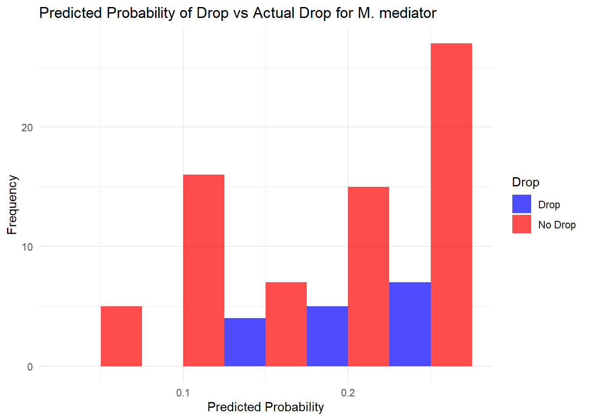

The following objects are masked from 'package:base':
as.Date, as.Date.numeric
# Set file path (replace with your actual file path)file_path <-"data/parasitoid.xlsx"d0 <-read_excel(file_path)
A logistic regression analysis was conducted to evaluate the relationship between host weight and thrashing frequency as predictors of dropping behavior (Drop vs No Drop) in M. mediator. The model estimated the likelihood of dropping, and predicted probabilities were visualized in a histogram to compare the model’s predictions with the observed drop behavior.
# --- Filter data for M. mediator (mm) and Drop vs No Drop ---mediator_data_drop <- d0 %>%filter(wasp.species =="mm") %>%select(host.weight, thrash.frequency, host.drop) %>%mutate(Drop =ifelse(host.drop ==1, "Drop", "No Drop"))# --- Logistic Regression Model: Drop vs No Drop ---# Logistic regression model for Drop vs No Droplogit_model_drop <-glm(host.drop ~ host.weight + thrash.frequency, data = mediator_data_drop, family =binomial(link ="logit"))# Displaying the summary of the logistic regression modelsummary(logit_model_drop)
Call:
glm(formula = host.drop ~ host.weight + thrash.frequency, family = binomial(link = "logit"),
data = mediator_data_drop)
Coefficients:
Estimate Std. Error z value Pr(>|z|)
(Intercept) -1.02362 0.42698 -2.397 0.0165 *
host.weight -0.03398 0.02269 -1.497 0.1343
thrash.frequency 0.01044 0.08138 0.128 0.8980
---
Signif. codes: 0 '***' 0.001 '**' 0.01 '*' 0.05 '.' 0.1 ' ' 1
(Dispersion parameter for binomial family taken to be 1)
Null deviance: 82.636 on 85 degrees of freedom
Residual deviance: 80.032 on 83 degrees of freedom
AIC: 86.032
Number of Fisher Scoring iterations: 4
# Predicted probabilities from the Drop vs No Drop modelmediator_data_drop$predicted_prob <-predict(logit_model_drop, type ="response")# Plotting predicted probabilities vs actual Drop statusggplot(mediator_data_drop, aes(x = predicted_prob, fill = Drop)) +geom_histogram(position ="dodge", binwidth =0.05, alpha =0.7) +labs(title ="Predicted Probability of Drop vs Actual Drop for M. mediator",x ="Predicted Probability", y ="Frequency") +scale_fill_manual(values =c("Drop"="blue", "No Drop"="red")) +theme_minimal()

A logistic regression analysis was conducted to evaluate the relationship between host weight and thrashing frequency as predictors of dropping behavior (Drop vs No Drop) in M. purchicronis. The model estimated the likelihood of dropping, and predicted probabilities were visualized in a histogram to compare the model’s predictions with the observed drop behavior.
# --- M. pulchricornis (mp) - Drop vs No Drop ---# Filter data for M. pulchricornis (mp) and select relevant columnspulchricornis_data_drop <- d0 %>%filter(wasp.species =="mp") %>%select(host.weight, thrash.frequency, host.drop)# Logistic regression model for Drop vs No Droplogit_model_drop_mp <-glm(host.drop ~ host.weight + thrash.frequency, data = pulchricornis_data_drop, family =binomial(link ="logit"))# Display summary of the logistic regression modelsummary(logit_model_drop_mp)
Call:
glm(formula = host.drop ~ host.weight + thrash.frequency, family = binomial(link = "logit"),
data = pulchricornis_data_drop)
Coefficients:
Estimate Std. Error z value Pr(>|z|)
(Intercept) -1.71471 0.50809 -3.375 0.000739 ***
host.weight -0.03061 0.02361 -1.297 0.194738
thrash.frequency 0.24055 0.08623 2.789 0.005279 **
---
Signif. codes: 0 '***' 0.001 '**' 0.01 '*' 0.05 '.' 0.1 ' ' 1
(Dispersion parameter for binomial family taken to be 1)
Null deviance: 90.830 on 85 degrees of freedom
Residual deviance: 81.329 on 83 degrees of freedom
AIC: 87.329
Number of Fisher Scoring iterations: 4
# Predicted probabilities from the logistic regression modelpulchricornis_data_drop$predicted_prob <-predict(logit_model_drop_mp, type ="response")# Plot predicted probabilities vs actual Drop statusggplot(pulchricornis_data_drop, aes(x = predicted_prob, fill =as.factor(host.drop))) +geom_histogram(position ="dodge", binwidth =0.05, alpha =0.7, color ="black") +labs(title ="Predicted Probability of Drop for M. pulchricornis",x ="Predicted Probability", y ="Frequency", fill ="Drop Status") +scale_fill_manual(values =c("0"="blue", "1"="red"), labels =c("No Drop", "Drop")) +theme_minimal()